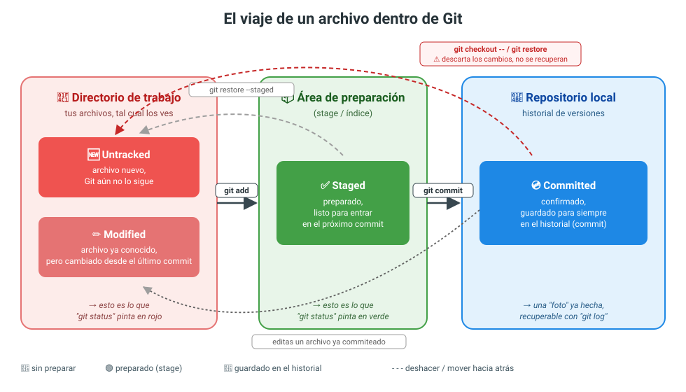

UD1. Control de versiones: Git y GitHub¶
¿Por qué lo primero?
Vais a usar Git y GitHub desde hoy hasta el último día de curso, en todas las prácticas. Cuanto antes se os haga costumbre, menos código perderéis por accidente 🙂
1. Un vistazo rápido¶
| ¿Qué es? | |
|---|---|
| 🗂️ Git | Un programa que instalas en tu ordenador. Guarda el historial de versiones de tus archivos. Funciona sin conexión a internet. |
| 🌐 GitHub | Una web que aloja repositorios Git en la nube. Permite compartir código, colaborar y hacer copia de seguridad remota. |
Git es la herramienta. GitHub es uno de los sitios donde puedes guardar tus repositorios de Git (hay otros: GitLab, Bitbucket...).
2. Instalación y configuración¶
Instalar Git¶
- Descarga: git-scm.com/download
- Comprueba que se ha instalado bien:
git --version
Configurar tu identidad (una sola vez por ordenador)¶
git config --global user.name "Nombre Apellidos"
git config --global user.email "tu_correo@edu.gva.es"
No lo olvides
Cada commit que hagas queda firmado con este nombre y correo. Si no configuras esto, luego no podrás verificar la autoría de tus prácticas.
(Opcional) Elegir editor de texto para Git¶
Si no indicas nada, Git usará vim, que es incómodo si no lo conoces. Mejor usa VS Code:
git config --global core.editor "code --wait"
3. El ciclo de vida de un archivo en Git¶
Esta es la idea más importante de toda la unidad. Un archivo pasa por tres "sitios" antes de quedar guardado de verdad:
flowchart LR
A["📁 Directorio de trabajo<br/>(tus archivos tal cual los ves)"] -->|"git add"| B["📦 Área de preparación<br/>(stage)"]
B -->|"git commit"| C["💾 Repositorio local<br/>(historial guardado)"]- Directorio de trabajo: donde editas tus archivos normalmente.
- Área de preparación (stage): una "cesta" donde vas metiendo los cambios que quieres guardar en la próxima versión.
- Repositorio: el historial real, con todas las versiones (commits) ya confirmadas.
En detalle, un archivo puede estar en cuatro estados distintos, y estos son los comandos que lo mueven de uno a otro:

- 🆕 Untracked: archivo nuevo que Git todavía no vigila.
- ✏️ Modified: archivo que Git ya conoce, pero que has cambiado desde el último commit.
- ✅ Staged: ya está en la cesta (
git add), listo para el próximo commit. - 💿 Committed: ya forma parte del historial (
git commit).
Truco para entenderlo
Piensa en el commit como hacer una foto del contenido de la cesta (área de preparación) en ese instante. Lo que no metiste en la cesta, no sale en la foto.
4. Comandos básicos en local¶
Crear un repositorio¶
git init
Ver en qué estado están tus archivos¶
git status
| Color | Significado |
|---|---|
| 🔴 Rojo | Archivo modificado o nuevo, todavía no está en la cesta |
| 🟢 Verde | Archivo ya añadido al área de preparación, listo para el próximo commit |
Ver qué ha cambiado exactamente¶
git diff # cambios sin preparar
git diff --staged # cambios ya en la cesta
Añadir cambios a la cesta¶
git add archivo.txt # un archivo concreto
git add . # todos los archivos nuevos o modificados
Confirmar cambios (crear una versión)¶
git commit -m "Mensaje claro de lo que has hecho"
Buenos mensajes de commit
❌ "cambios", "cosas", "asdf"
✅ "Añade validación del formulario de login"
Ver el historial¶
git log # historial completo
git log --graph # historial en forma de árbol
q.
Deshacer cosas (con cuidado)¶
| Comando | Qué hace | ¿Peligroso? |
|---|---|---|
git reset archivo |
Saca un archivo de la cesta (no pierdes el cambio) | 🟢 Seguro |
git checkout -- archivo |
Descarta los cambios del archivo, vuelve al último commit | 🔴 Peligroso, se pierde el cambio |
git stash |
Guarda los cambios a un lado temporalmente | 🟢 Seguro |
git stash pop |
Recupera lo guardado con stash |
🟢 Seguro |
Ignorar archivos: .gitignore¶
Crea un archivo llamado .gitignore en la raíz del proyecto con los archivos/carpetas que no quieres subir (ficheros compilados, carpetas de configuración del IDE, contraseñas...):
*.class
/bin/
.vscode/
Hay plantillas ya hechas para casi cualquier lenguaje en github.com/github/gitignore.
5. Pasar a lo remoto: GitHub¶
Hasta ahora todo ha sido en tu ordenador. Para compartirlo o hacer copia de seguridad, lo subimos a GitHub:
flowchart LR
A["💻 Repositorio local"] -->|"git push"| B["🌐 Repositorio remoto<br/>(GitHub)"]
B -->|"git pull"| A
B -->|"git clone"| C["💻 Nuevo equipo"]| Comando | Qué hace |
|---|---|
git clone URL |
Descarga un repositorio remoto completo a tu ordenador |
git push |
Sube tus commits locales a GitHub |
git pull |
Descarga y fusiona los cambios que hay en GitHub |
git remote -v |
Muestra a qué repositorio remoto estás conectado |
6. Ramas (branches)¶
Una rama es una línea de trabajo independiente. Te permite probar cosas o desarrollar una funcionalidad sin tocar el código que ya funciona.
%%{init: {'gitGraph': {'showBranches': true}}}%%
gitGraph
commit id: "inicio"
commit id: "login"
branch feature-carrito
checkout feature-carrito
commit id: "añade carrito"
commit id: "arregla bug"
checkout main
merge feature-carrito
commit id: "release"| Comando | Qué hace |
|---|---|
git branch |
Lista las ramas que tienes |
git branch nombre-rama |
Crea una rama nueva |
git checkout nombre-rama |
Cambia a esa rama |
git checkout -b nombre-rama |
Crea la rama y cambia a ella en un solo paso |
git merge nombre-rama |
Fusiona esa rama con la actual |
Conflictos de fusión
Si dos ramas modifican la misma línea del mismo archivo de forma distinta, Git no sabe cuál te interesa y te pide que decidas tú. Esto es un conflicto: no es un error, es Git pidiéndote ayuda.
7. Trabajo colaborativo en GitHub: Fork + Pull Request¶
Este es el flujo habitual cuando colaboras en un proyecto que no es tuyo (o en las prácticas en grupo):
flowchart TD
A["Repositorio original"] -->|"1. Fork"| B["Tu copia en GitHub"]
B -->|"2. git clone"| C["Tu equipo local"]
C -->|"3. Rama + commits"| C
C -->|"4. git push"| B
B -->|"5. Pull Request"| A
A -->|"6. Revisión + Merge"| A- Fork: te copias el repositorio a tu cuenta de GitHub.
- Clone: te lo bajas a tu ordenador.
- Trabajas en una rama, haciendo tus commits.
- Push: subes la rama a tu copia (fork) en GitHub.
- Pull Request (PR): le pides al proyecto original que incorpore tus cambios.
- El dueño del proyecto revisa tu código (code review) y, si está bien, lo fusiona (merge).
8. Buenas prácticas 💡¶
- Haz commits pequeños y frecuentes, no un único commit gigante al final del día.
- Escribe mensajes de commit en presente e imperativo: "Añade", "Corrige", "Elimina"...
- Una rama por funcionalidad o por bug, no trabajes siempre directamente sobre
main. - Añade un
.gitignoredesde el primer commit del proyecto. - Antes de empezar a trabajar cada día, haz
git pullpara tener la última versión. - Nunca subas contraseñas, claves de API ni datos personales a un repositorio.
9. Chuleta resumen¶
| Quiero... | Comando |
|---|---|
| Crear un repositorio | git init |
| Ver el estado de mis archivos | git status |
| Ver qué he cambiado | git diff |
| Preparar cambios para guardarlos | git add archivo / git add . |
| Guardar una versión | git commit -m "mensaje" |
| Ver el historial | git log --graph |
| Crear y cambiar de rama | git checkout -b nombre-rama |
| Fusionar una rama | git merge nombre-rama |
| Clonar un repositorio remoto | git clone URL |
| Subir cambios a GitHub | git push |
| Bajar cambios de GitHub | git pull |
10. Para saber más¶
- Libro de Git en español — la referencia completa y gratuita.
- Hoja de referencia oficial de GitHub (PDF)
- github.com/github/gitignore — plantillas de
.gitignorepor lenguaje. - Curso "Gestión de la tarea docente con GitHub" (Pedro Prieto, CEFIRE): github.com/pedroprieto/curso-github